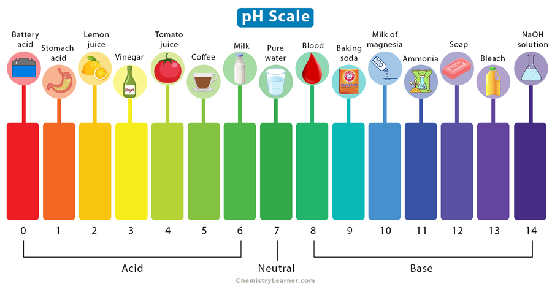
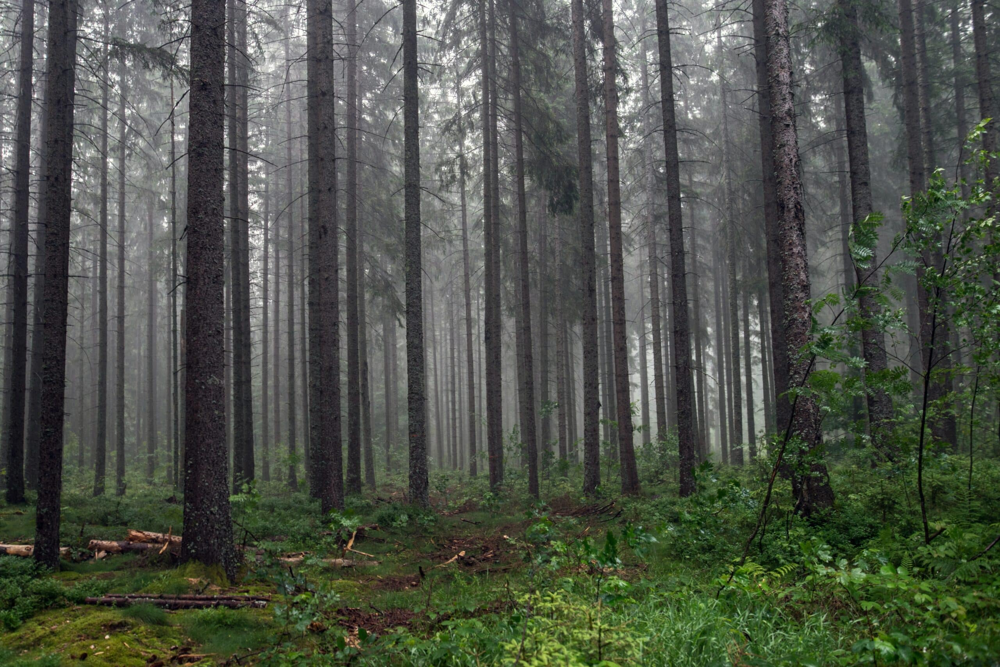

What causes acid rain?
Acid rain is due both natural (volcanos and plant decomposition) and man-made (generation of electricity and burning of fossil fuels) causes. The gasses produced by these events, namely sulfur dioxide (SO2) nitrogen oxides (NOx) are a direct result of the burning of fossil fuels. The gasses rise into the atmosphere where they are converted into sulfuric acid (H2SO4) and nitric acid (HNO3) and dissolved into water vapor in the atmosphere. While most acid rain clouds begin in cities, they can be carried away by winds to rural areas which are more impacted by acid rain.
Effects of acid rain on the environment
A certain amount of acid rain can benefit an ecosystem (soil is naturally somewhat basic due to limestone and acid rain helps the soil balance out and neutralize), however in the areas lacking in limestone, acid rain can greatly harm the environment.
Natural rain has a pH of 5.6 and a healthy lake has a pH of 6.5 while acid rain has a pH within the range of 4.2 and 4.4, over 10 times more acidic than clean rain and over 100 times more acidic than a natural lake. At a pH of 6.0 rainbow trout, native to America’s northwest and introduced to the Great Lakes region, begin to die. At a pH of 5.5 frog eggs, tadpoles, crayfish, and mayflies begin to die. At a pH of 4.2, all fish in the area are dead.
 A reference image for the pH scale.Acid rain also affects vegetation, namely evergreen trees. There is a forest in Germany called the Black Forest (pictured below) which is a result of acid rain destroying the pine needles and leaving behind the black trunks and branches.
 Ground view of Germany's Black Forest.Effects of acid rain on people
As stated before, acid rain mainly affects rural areas in both good and bad ways; for a farmer, it could mean a bountiful harvest while for a fisherman it could mean the end of his lifestyle. Acid rain has gotten more severe with the worsening of climate change and is affecting more people as a result, mainly those who live in rural areas or those who fish and farm as a lifestyle and governments around the world have done the minimum to stop the expansion of climate change which, in turn, continues to worsen with the continued burning of fossil fuels in the form of oil and coal.
Information by US Geological Survey · Black Forest Image by Air Doctor · pH Scale Image by Chemistry Learner